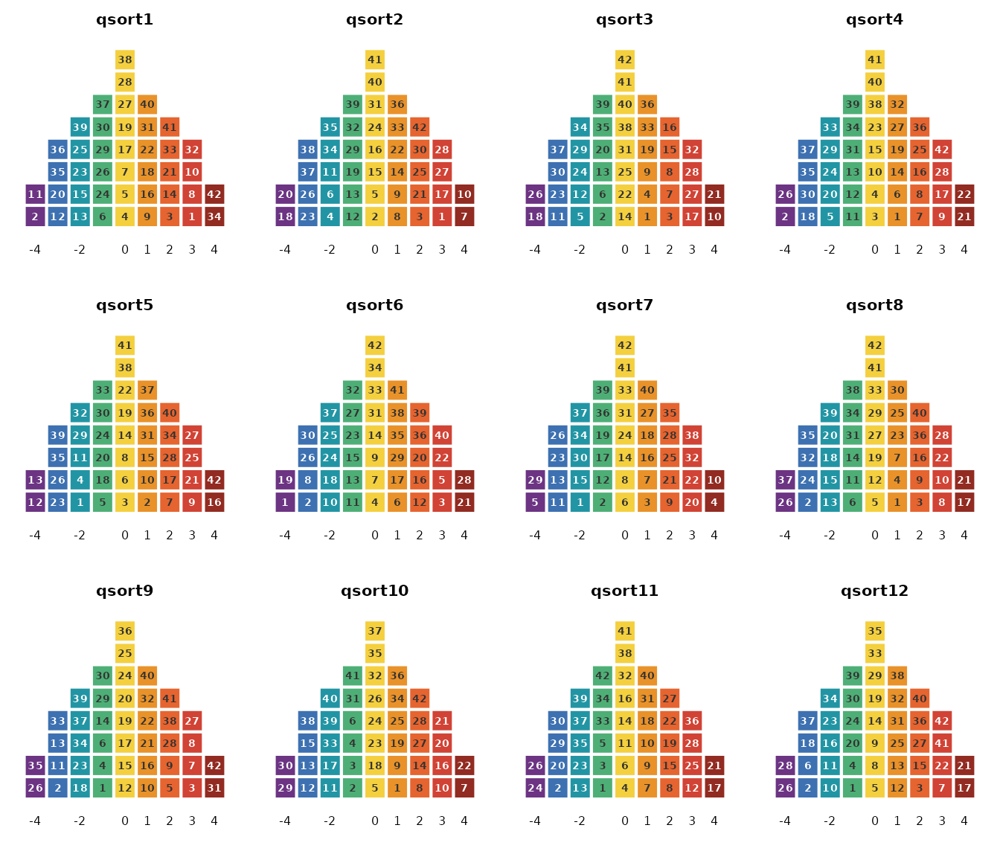
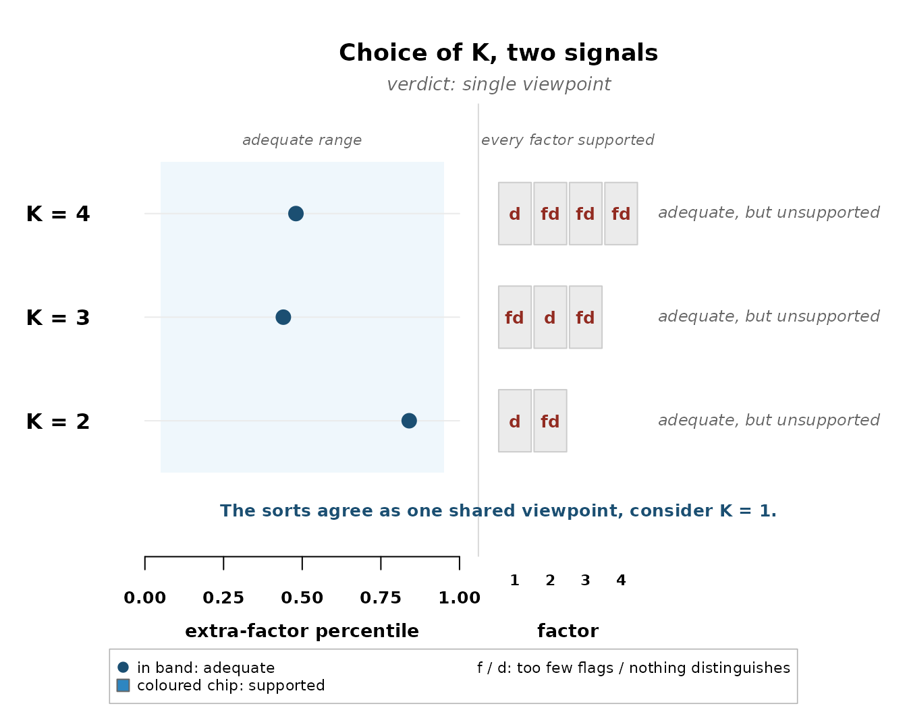
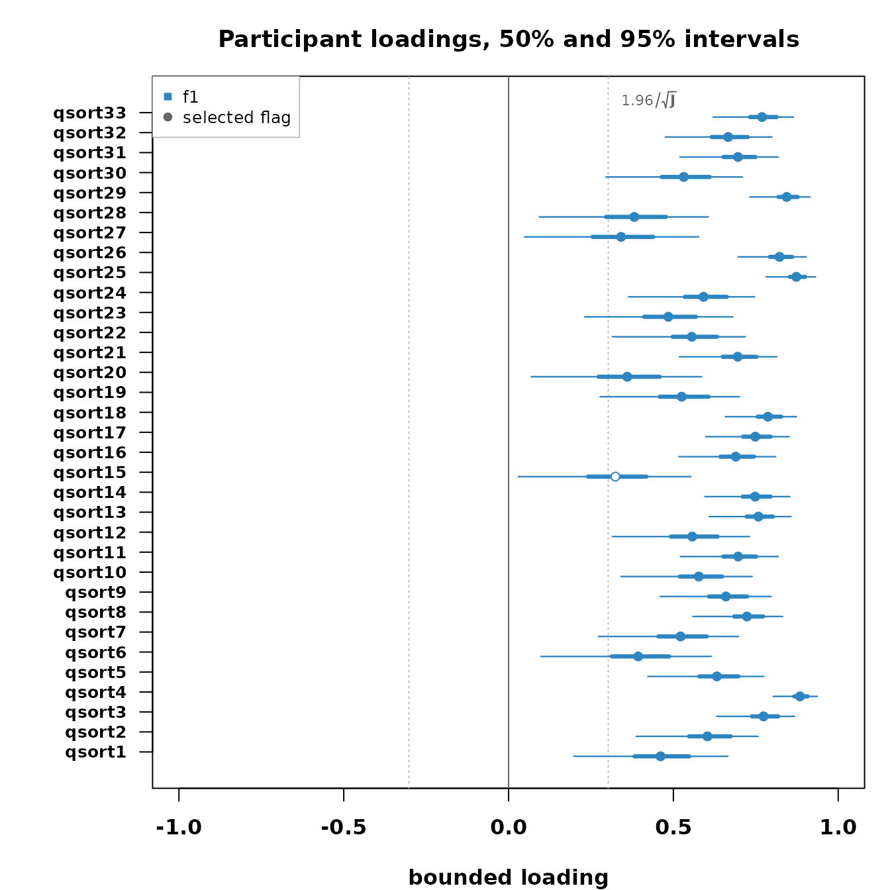
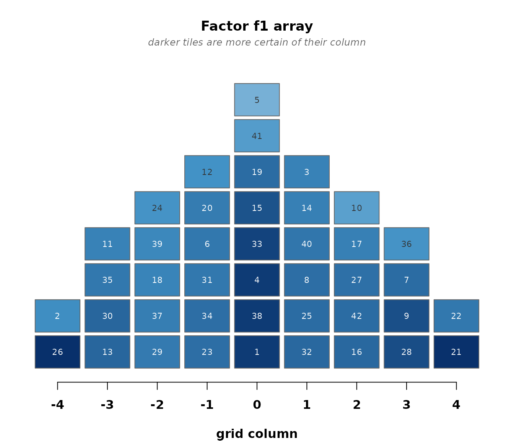
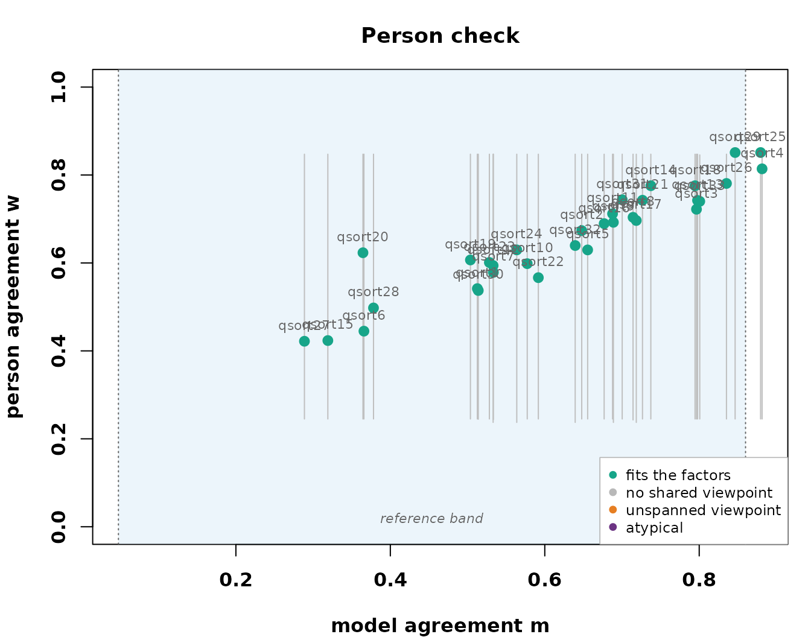

This walkthrough runs the childhood obesity panel of Akhtar-Danesh (2023) from raw sorts to write-up. The package front page shows this panel’s headline, the ladder refusing a multi-factor solution and reading the panel as one shared viewpoint. Here the analysis goes all the way, with the checks and the tables a study would quote.
The sorts
33 participants sorted 42 statements about childhood obesity onto a nine-column grid.
data(obesity_sorts)
obesity_sorts
#> Q-sort data
#> statements : 42 participants : 33
#> distribution: 2 4 5 6 8 6 5 4 2 (sum = 42 )
#> value range : [-4, 4]
#> source : excel:Childhood obesity dataset.xlsx
plot(obesity_sorts, participants = 1:12)
The ladder, row by row
Fit two, three, and four factors and let the two checks read each candidate.
sel <- select_k(fit_ladder(obesity_sorts, K_min = 2, K_max = 4,
seed = 11, quiet = TRUE))
plot_choice_k(sel)
Read the rows. Every dot sits in the band, so every K accounts for
the panel. On the right, one chip at every K carries a d
alone, that factor attracts flags but not one statement distinguishes it
from the others, and every other chip carries fd, neither
flags nor a distinguishing statement. Flags piling onto one factor while
nothing separates the factors is the signature of a single shared
viewpoint, and the verdict says so. The marijuana panel, the package’s
second shipped dataset, refuses differently, no factor attracts flags at
all and the verdict is no shared structure. The classical analysis of
the obesity panel reports three factors, and the validation article
shows how the two accounts relate, factor by factor.
The one-factor fit
fit1 <- fit_bayesian(obesity_sorts, K = 1, seed = 11)
#> grid labels -4..4 recoded onto categories 1..9 (a monotone relabeling; the sorts are unchanged)
fit1
#> bayesqm fit: exact partition (rank-order) likelihood, PX-Gibbs
#> 33 participants, 42 statements, 1 factor; grid 2-4-5-6-8-6-5-4-2
#> draws: 2000 kept (12000 iterations, burn 2000, thin 5)
#> gate: passed (max Rhat 1.004; min ESS 1333 bulk / 1272 tail)
#> alignment: pivot draw 1, mean congruence 0.97
#> tables: compute_loadings(), compute_flags(), compute_factor_array(),
#> compute_qdc(), claims()Who carries the shared viewpoint, and how strongly:
plot_loading_posterior(fit1)
With one factor there are no pairs to distinguish, so the claims are the flags:
claims(fit1)
#> Selected claims at q = 0.05 (posterior expected FDR):
#> flags 32 participants selected (expected false 1.54)
#> distinguishing 0 listings selected (expected false 0.00)
#> consensus 0 statements selected (expected false 0.00)
#> stars 0 pairwise selected (expected false 0.00)
factor_characteristics(fit1)
#> factor flagged defining_modal defining_mean defining_lower defining_upper
#> 1 f1 32 31 31.053 29 33
#> score_spread reliability
#> 1 0.1784857 0.4350419The shared sort
The reported array is the viewpoint written as a completed sort, and with most of the panel behind it, the placements are firm.
plot_factor_array(fit1)
A write-up quotes the poles. crib_sheet() gives the
probability of each statement landing in the extreme columns and of
being the single most or least agreed statement:
cs <- crib_sheet(fit1)
head(cs[order(-cs$p_top), ], 3)
#> statement factor p_top p_bottom p_highest p_lowest
#> 21 21 f1 0.9875 0 NA NA
#> 22 22 f1 0.6265 0 NA NA
#> 7 7 f1 0.3000 0 NA NA
head(cs[order(-cs$p_bottom), ], 3)
#> statement factor p_top p_bottom p_highest p_lowest
#> 26 26 f1 0 0.9960 NA NA
#> 2 2 f1 0 0.5185 NA NA
#> 30 30 f1 0 0.2170 NA NAThe checks
Does one factor account for the panel, and does it span the people?
check_fit(fit1, draws = 40)
#> Posterior-predictive checks (40 replicated draws):
#> agreement check (T1a): p = 0.30
#> extra-factor check (T1b): observed e_(K+1) at percentile 0.70
#> paired-comparison check (T2): p = 0.15 (worst statement 0.07)
#> diagnostics to read, not tests to pass
pc <- check_persons(fit1)
table(pc$verdict)
#>
#> fits
#> 33
plot_person_check(pc)
One factor sits comfortably inside every check, and the person check spans the whole panel. The single viewpoint is not a compromise the refusal forced, it is the model the data support.
What you report
The study’s findings are the shared array, the pole shortlists, and the loadings with their flags, each carrying its uncertainty. The write-up also owes the reader the ladder, because the single viewpoint is a decision the checks made, not an assumption. The classical account of this panel reports three factors, and the two readings are not in contradiction so much as at different standards of evidence. The correspondence between them, where it is tight and where it dissolves, is worked through in the validation article.